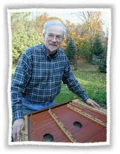

.webp)

Ben Space
Spence began playing the hammered dulcimer after hearing Howie Mitchell at the 1969 Fox Hollow Festival in Petersburgh, New York. He made his first dulcimer following a plan in Mitchell's book. The only hammered dulcimer recordings available at the time were by Mitchell and another player, Chet Parker on the Folkways label.
Spence developed his own style, working out tunes he heard on recordings of other instruments. In 1970, Spence helped form Fennig's All-Stars, which featured his hammered dulcimer as the lead instrument.
The group made its first recording, The Hammered Dulcimer in 1973, using a two-track recorder in Spence's living room. The album was widely distributed (over 60,000 copies have been sold), and became very influential in the early part of the hammered dulcimer revival. One of the cuts from the record (Gaspé Reel and Fiddle Head Reel) was used as the theme for the popular PBS series Crockett's Victory Garden. The album was also designated as a "Recording of Special Merit" by Stereo Review magazine. The Hammered Dulcimer also marked the beginning of Spence's own record label, Front Hall Records.
In addition to several further albums by Spence and Fennig's All-Stars, the label also released albums by a number of other folk performers, including John McCutcheon, Walt Michael and Company, Louis Killen, and Alistair Anderson. Spence and his wife, Andy, also operated Andy's Front Hall, a mail-order business selling instruments, recordings, instructional materials, and related items. In 2005, the business was scaled down from a full-service operation
Spence developed his own style, working out tunes he heard on recordings of other instruments. In 1970, Spence helped form Fennig's All-Stars, which featured his hammered dulcimer as the lead instrument.
The group made its first recording, The Hammered Dulcimer in 1973, using a two-track recorder in Spence's living room. The album was widely distributed (over 60,000 copies have been sold), and became very influential in the early part of the hammered dulcimer revival. One of the cuts from the record (Gaspé Reel and Fiddle Head Reel) was used as the theme for the popular PBS series Crockett's Victory Garden. The album was also designated as a "Recording of Special Merit" by Stereo Review magazine. The Hammered Dulcimer also marked the beginning of Spence's own record label, Front Hall Records.
In addition to several further albums by Spence and Fennig's All-Stars, the label also released albums by a number of other folk performers, including John McCutcheon, Walt Michael and Company, Louis Killen, and Alistair Anderson. Spence and his wife, Andy, also operated Andy's Front Hall, a mail-order business selling instruments, recordings, instructional materials, and related items. In 2005, the business was scaled down from a full-service operation